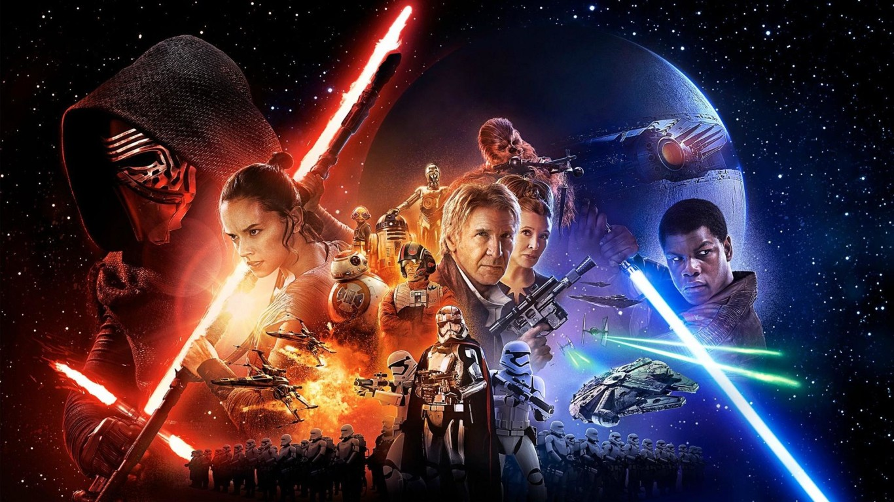
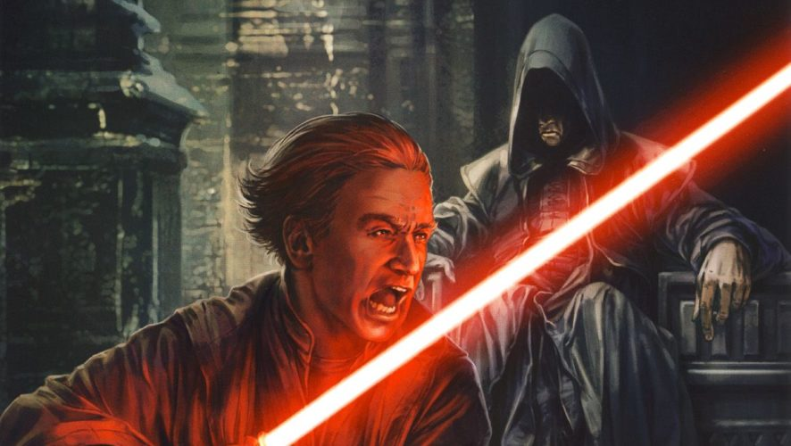

ÚLTIMAS NOTICIAS


¿Por qué Disney no va a seguir produciendo tantas películas de Star Wars?
Un directivo de la compañía aceptó que estaban saturando a la audiencia con tantos filmes en
tan
corto tiempo. La siguiente trilogía de películas estará a cargo de los creadores de la serie
Game of
Thrones.

En 2012, Disney decidió comprar Lucas Film por 4.000 millones de
dólares con la idea de dar un
giro a la saga de Star Wars. Pese al éxito que ha tenido la mayoría de películas (Episodio 7: El
despertar de la fuerza, Episodio 8: El último Jedi, Rogue One y Solo) el gigante del entretenimiento
estaría pensando en bajar el ritmo con el que produce los filmes inspirados en la historia de George
Lucas.
La decisión la dio a conocer el presidente del grupo Bob Iger, que reconoció que
fue un error
lanzar un capítulo de la saga cada año. "Tomé una decisión sobre el cronograma (de estrenos)
y ahora
que veo atrás creo que cometí un error, y asumo la culpa. Fue un poco, demasiado
rápido", dijo Iger
en una entrevista con el Hollywood Reporter publicada el jueves. "Puede esperarse una
desaceleración, pero no significa que dejaremos de hacer películas".
Disney programó estrenos de películas relacionadas con "Star Wars" cada año
desde la salida de
"El despertar de la fuerza" en 2015, lo que muchos miembros de la industria
estimaron que podía
terminar espantando a los fanáticos más furibundos.
Después de todo, ese episodio VII llegó 30 años después de "El retorno del
Jedi".
La idea era estrenar spinoffs entre las películas del hilo original de "Star Wars".
La más reciente, "Solo: A Star Wars Story", fue un relativo fracaso
comercial, con una
taquilla de 400 millones de dólares en todo el mundo, lo que llevó a pensar en ese agotamiento de la
historia.
En contraste con el episodio VIII "Los últimos Jedi", que fue lanzado seis
meses antes, al
final de 2017, con una taquilla global de 1.300 millones de dólares.
El episodio IX, que sería el último relacionado con la familia Skywalker, está previsto para
diciembre de 2019.
Lucasfilm anunció en febrero que los creadores de "Game of Thrones"
realizarán una nueva
trilogía sobre la épica guerra espacial.
Los filmes de Danid Benioff y D.B. Weiss se distanciarán de la trama principal de la familia
Skywalker y de la nueva trilogía que desarrollará Rian Johnson, el guionista y director de
"Los
últimos Jedi".
"Estamos en un punto en el que vamos a comenzar a tomar decisiones sobre lo que sigue" después
del episodio IX, dijo Iger. "Pero creo que vamos a ser más cuidadosos con el volumen y los
tiempos".
Para Robert Thompson, profesor de cultura pop en la Universidad de Syracuse, "La
Guerra de las
Galaxias" se ganó la adoración mundial "como un manjar poco común y poco frecuente",
con 15 años
entre las dos primeras trilogías, y otros 10 antes de que viéramos la tercera".
"Las películas de ‘Star Wars‘ eran como langostas, o lunas azules: impresionantes pero no muy
seguidas. Todo eso ha cambiado, e Iger probablemente tenga razón en su evaluación", dijo Thompson a
la AFP.
Pero añadió: "la franquicia puede que esté mostrando la edad, pero desaceleración o
no, espero
ver mucho más intentos para exprimirla porque vale la pena".
Disney anuncia una nueva serie de 'Star Wars' para su plataforma de streaming

El CEO de Disney, Bob Iger, ha anunciado esta semana varias novedades
sobre la plataforma en
streaming Disney+. Entre ellas, se encuentra una fántastica noticia para los seguidores del universo
de LucasFilm. Se rodará una serie centrada en el personaje de Diego Luna en Rogue One.
La serie estará ambientada en los hechos anteriores a la aventura de Rogue One, donde Jyn Erso
junto con Cassian Andor se hacen con los planos de la estrella de la muerte. Esta nueva serie
contará los inicio de la Rebelión y será un thriller de espías. El protagonista será el espía
rebelde Cassian Andor, un papel que será de nuevo interpretado por el actor méxicano Diego
Luna.
“Volver al universo de Star Wars es muy especial para mí (…) Tengo muchos recuerdos
del gran
trabajo que hicimos juntos y las relaciones que establecimos durante todo el viaje. Tenemos
frente a
nosotros una aventura fantástica, y este nuevo y emocionante formato nos dará la oportunidad de
explorar el personaje de forma más profunda”, ha afirmado el actor en una nota de
prensa.
Según Disney, el rodaje comenzará en 2019, por lo que no veremos su estreno hasta finales de
2019 o principios de 2020. Antes, los fans de Stars Wars, verán el estreno The Mandolarian, escrita
y dirigida por Jon Favreau y que se ubicará cronológicamente entre la caída del Imperio y la
aparición de la Primera Orden.
Rumor: El actor Matt Smith interpretaría a un joven Palpatine en el Episodio IX

Este es un rumor bastante extraño, pero según el podcast The
Weekly Planet Podcast, el
recientemente anunciado actor Matt Smith interpretaría a un joven Palpatine en el Episodio final de
la saga, así es, a un joven Emperador.
Durante uno de los segmentos del Podcast se reveló que el actor británico le daría vida a un
joven Sheev Palpatine en una de las escenas del Episodio IX, todo esto según una de las fuentes
cercanas a la producción de la película.
Por supuesto, desconocemos cual seria el rol y el motivo de volver a ver al Emperador en
pantalla y mucho mas viéndolo a este joven, quizás mucho antes de los sucesos del Episodio I, La
Amenaza Fantasma.

Desde ya podemos teorizar que la escena en cuestión se trate de un flashback como los que
vimos en Los Últimos Jedi, donde Kylo Ren y/o Rey vean al joven Emperador entrenar junto a su
maestro Darth Plagueis, asesinándolo y desencadenando todos los sucesos de la saga.
Esperamos pronto tener alguna otra confirmación de este rumor, o alguna filtración si resulta
ser cierto.